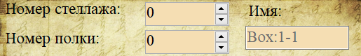
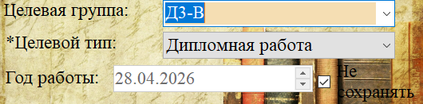
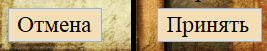

Данная форма используется для регистрации новых архивных коробок или редактирования сведений о существующих. Ниже приведено описание элементов интерфейса и порядка действий.
В верхней части формы указывается место хранения коробки.

Box:Стеллаж-Полка (например, Box:1-1). Вы можете отредактировать его вручную.
Центральная часть формы отвечает за типологию содержимого.

| Элемент | Описание действия |
|---|---|
| Целевая группа | Выберите группу из выпадающего списка. Список загружается из справочника групп. |
| *Целевой тип | Обязательное поле. Выберите тип документа. Без выбора типа сохранение невозможно. |
| Год работы | Поле выбора года. Активно только если снята галочка «Не сохранять». |
| Не сохранять | Чекбокс. Если он установлен (по умолчанию), поле «Год работы» заблокировано. Снимите галочку, чтобы указать год. |
В нижней части формы расположены кнопки управления.
